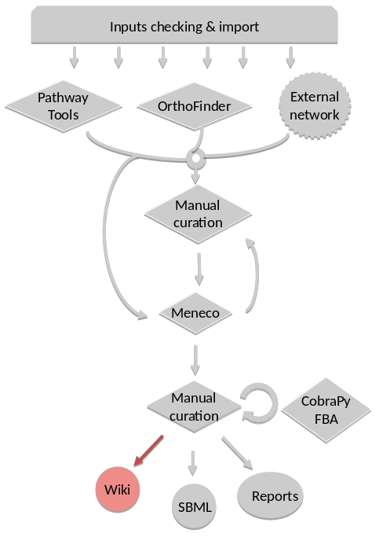

FAQ¶
Can I have a sample of AuReMe?¶
To get an overview of AuReMe, you can get a sample by using this command:
aureme> aureme --run=test --sample
You will get a folder named ‘aureme_sample’ in your bridge directory (i.e: /home/data/run_template/aureme_sample). This folder contains all input and o utput files as if you had run the entire metabolic network reconstruction workflow for the example files about Tisochrysis lutea (microalgae). Look at the logs file to understand the different commands used in the reconstruction process.
Note
if you do not want to pollute your log files when testing things in your sample run, do not forget to use the quiet (-q) argument in your command(s) if you wish not to store any log, this way:
aureme> aureme --run=aureme_sample --cmd="cmd args" -q
How to convert files to different formats?¶
The AuReMe workspace natively provides several functions for formats conversion, through the PADMet Python package. The available convertors are:
From sbml to padmet format:
aureme> aureme --run=test --cmd="draft"
This command will convert all sbml in networks folder of ‘test’ to one padmet. If you want to convert one sbml to padmet format, simply put this file in networks folder of your run and make sure there is no other sbml file nor padmet file, either in networks directory, or in one of the sub-directory of networks. Then run the command.
If you want to merge many sbml to one padmet, add all of them in networks > external_network folder then run the command. Ensure that there is no other sbml nor padmet file, either in networks directory, or in one of the sub-directory of networks before running the command. In the case one sbml would be forgotten, it could add to the resulted draft.padmet or another reading error could occur.
From padmet to sbml format:
aureme> aureme --run=test --cmd="padmet_to_sbml NETWORK=my_network [LVL=3]"
This command will convert the padmet file my_network.padmet from networks folder of ‘test’ to create a sbml file my_network.sbml. By default the sbml level is set to ‘3’, you can change the default value in the config.txt file or with the argment LVL (3 or 2)
From txt to sbml format:
aureme> aureme --run=test --cmd="compounds_to_sbml CPD=/path/to/file/root_txt_file"
This command will convert a txt file containing compounds ids to a sbml file /path/to/txt_file.sbml. The txt file must contain one compound id by line and optionally the compartment of the id which by default is ‘c’. Example of file:
- From GFF/GBK to FAA format:
Note
AuReMe integrate some scripts from padmet-utils tools, for example, gbk_to_faa command use the script /programs/padmet-utils/connection/gbk_to_faa.py. Not all functions are encapsulated in AuReMe, there is a lot of scripts that could be helpful. For more information, see https://github.com/AuReMe/padmet-utils.
aureme> aureme --run=test --cmd="gbk_to_faa GBK_FILE=/path/to/gbk_file OUTPUT=/path/to/output_file"
How to manage growth medium?¶
In AuReMe, a compound is defined as a part of the growth medium (or ‘seeds’ for gap-filling tools) if this compound is in the compartment ‘C-BOUNDARY’.

The growth medium is linked to the metabolic network by two reactions, a non-reversible reaction named ‘TransportSeed-compound-id’ which transport a compound of the growth medium from the compartment ‘C-BOUNDARY’ to the ‘e’ (extra-cellular) and a reversible reaction named ‘ExchangeSeed-compound-id’ which exchange the same compound from ‘e’ to the ‘c’ (cytosol). When creating a sbml file, the compounds in the ‘C-BOUNDARY’ compartment will be set as ‘BOUNDARY-CONDITION=TRUE’ to allow flux (see http://sbml.org/Documents/FAQ#What_is_this_.22boundary_condition.22_business.3F).
Note
Some metabolic networks manage the growth medium with a reversible reaction which consume nothing and produce a compound in the ‘c’ compartment. We chose not to do the same for clarity and because this metod made crash some dedicated tools for metabolic network .
Get the list of compounds corresponding to the growth medium of a network in padmet format:
aureme> aureme --run=test --cmd="get_medium NETWORK=network_name"
Return a list of compounds or an empty list
Set the growth medium of a network in padmet format:
aureme> aureme --run=test --cmd="set_medium NETWORK=network_name [NEW_NETWORK=new_network_name]"
This command will remove the current growth medium if existing, then create the new growth medium by adding the required reactions as described before.
Delete the growth medium of a network in padmet format:
aureme> aureme --run=test --cmd="del_medium NETWORK=network_name [NEW_NETWORK=new_network_name]"
This function will remove all reactions consuming/producing a compound in ‘C-BOUNDARY’ compartment.
Warning
If you don’t precise any NEW_NETWORK name, the current network will be overwritten.
How to manage metabolic network compartment?¶
In a metabolic network a compound can occur in different compartment. Given a reaction transporting CA2+ from ‘e’ (extra-cellular compartment) to ‘c’ (cytosol compartment), the compartments involved are ‘e’ and ‘c’. It is important to properly manage the compartments defined in a network to ensure a correct connection of the reactions. In some case metabolic networks can use different id to define a same compartment like ‘C_c’, ‘C’, ‘c’ for cytosol, merging those networks could leak to a loss of network connectivity. A reaction producing CA2+ in ‘c’ and a reaction consuming CA2+ in ‘C_c’ are actually not connected, hence the interest of the metabolic network compartment management commands of AuReMe.
Get the complete list of compartment from a network in padmet format:
aureme> aureme --run=test --cmd="get_compart NETWORK=network_name"
Return a list of compartment or an empty list.
Change the id of a compartment from a network in padmet format:
aureme> aureme --run=test --cmd="change_compart NETWORK=network_name OLD=old_id NEW=new_id [NEW_NETWORK=new_network_name]"
This command will change the id of the compartment ‘old_id’ to ‘new_id’. This command is required if different ids are used to define a same compartment, example changing ‘C_c’ to ‘c’, or ‘C-c’ to ‘c’ …
Delete the id compartment from a network in padmet format:
aureme> aureme --run=test --cmd="del_compart NETWORK=network_name compart=compart_id [NEW_NETWORK=new_network_name]"
This function will remove all reactions consuming/producing a compound in ‘compart_id’ compartment.
Warning
If you don’t precise any NEW_NETWORK name, the current network will be overwritten.
What are “artefacts”?¶
Meneco is a tool that fill the gaps topologically
in a network, thanks to a reference database (see
the Method: Meneco section). In fact, Meneco cannot
product any other metabolite of an cycle without
initiate it before.
Thereby, artefacts are metabolites allow Meneco to
initiate cycles in a metabolic network.
For example in the picture aside, the Kreps cycle
needs to be initiated with Meneco. A manner to
initiate the Kreps cycle into Meneco is to put the
“citrate” metabolite as one of the “artefacts”
|
before gap-filling the network
thanks to Meneco.
|
How to explore the topology of a metabolic network?¶
A manner of exploring and analyzing the topology of a metabolic network is to use the MeneTools (Metabolic Network Topology Tools). Two MeneTools: Menecheck and Menescope are included in AuReMe. You can run the one or the other individually.
|
|


To obtain additional information about the file format of artefacts.txt, seeds.txt, and targets.txt, please refer to Gap-filling input and What are “artefacts”? sections.
Menecheck gives the producibility status using graph-based criteria. To run Menecheck, use this command:
aureme> aureme --run=test --cmd="menecheck NETWORK=network_name"
Menescope provides the topologically reachable compounds from seeds (and artefacts) in a metabolic network. To run Menescope, use this command:
aureme> aureme --run=test --cmd="menescope NETWORK=network_name"
How to manage the log files?¶
By default, the system registers all the executed commands as a log in the bridge > test > log.txt file. The whole output of these commands will also be stored in another file: the bridge > test > full_log.txt file.
If you DO NOT wish to store such logs, you can use the quiet (-q) argument in your command(s). For example:
aureme> aureme --run=test --cmd="some_commands" -q
It is possible to re-run a previous command by copying the corresponding command line in the bridge > test > log.txt file, and pasting it in the Docker container terminal.
To be able to reproduce the whole workflow applied in a previous study, please see the How to reproduce studies? section.
How to reproduce studies?¶
If you want to re-run the complete workflow of a pre-run study, built with AuReMe:
First of all please create a new study (as described in the Start a new study section) by running the init command:
aureme> aureme --init=my_run2
Warning
You can choose any run name you want, except pre-existing runs. Please, avoid other special characters than ‘_’ and numbers).
It generates a new folder named my_run2 in the bridge directory.
Update your config.txt file, if it is needed.
Now, copy all the input data from the previous study in this new folder (please, follow the folder architecture described in the Data organization section).
Copy also the log.txt file in the bridge > my_run2 directory, rename it (for example as run2.txt), and change every occurrence of the previous run name by my_run2.
Execute the previously created file.
aureme> ./shared/my_run2/run2.txt
How to create a new ‘à-la-carte’ workflow?¶
If you want to add a new step in the workflow or add a new method, it is possible to customize AuReMe. For that it is necessary to update the Makefile in your run. Here is an example of how to do it.
- Add a new method:
First, install your tool by following the documentation associated. For the example we will add a new tool for orthology-based reconstruction ‘new_tool’ which use the same input as Pantograph (a metabolic network in sbml format, a gbk of the reference species and the gbk of the study species) and generate the same output (a metabolic network in sbml format).
Secondly we will update the Makefile by adding these lines:
Basically this command says that for each folder in orthology_based_reconstruction (variable declared in config.txt), if the expected output is not already created, run new_tool.
Finally, to select this method in your new workflow, change in the file config.txt the variable ORTHOLOGY_METHOD=pantograph by ORTHOLOGY_METHOD=new_tool
- Add a new step or function:
Just update the Makefile by adding a new step and use it with this command
How to choose another reference database?¶
It is possible to select a reference database among several. You can display the list of all available databases by using this command:
The reference database is needed to:
- be able to match all the identifiers of the entities of metabolic networks
- gap-fill the metabolic network in the gap-filling step
To select one, replace the corresponding path in the configuration file: *config.txt*, in the *DATA_BASE* variable. Or you can comment the line if you don’t want/can’t use a database. The *config.txt* file is stored at the root of your *bridge* folder (see Running a Docker container).
What is checked in my input files?¶
Before running any command in AuReMe, it is highlight recommended to use the command ‘check_input’. This command checks the validity of the input files and can also create required files. Concretely this command:
- Checks database: If database was specified in the config.txt file (see the How to choose another reference database? section). If so, checks if a sbml version exist and create it on the other hand.
- Checks studied organism data: Search if there is a genbank (gbk/gff) ‘GBK_study.gbk’ and proteome (faa) ‘FAA_study.faa’ in genomic_data folder. If there is only a genbank, create the proteome (command ‘gbk_to_faa). If there is only the proteome or any of them, just continue the checking process. Note that the proteome is only required for the orthology-based reconstruction, method: Pantograph.
- |image8|Checks orthology-based reconstruction data: for each folder found in ‘orthology_based_reconstruction’ folder checks in each of them if there is proteome ‘FAA_model.faa’ and a metabolic network ‘metabolic_model.sbml’, if there is no proteome but a genbank file ‘GBK_study.faa’, create the proteome (command ‘gbk_to_faa). Finally, the command compares the ids of genes/proteins between the proteome and the metabolic network.
If cutoff… important because… dict file to create a new proteome file …
- Checks annotation-based reconstruction data: for each folder found in annotation_based_reconstruction’ folder checks in each of them if it’s a PGBD from pathway then create (if not already done) a padmet file ‘output_pathwaytools_’folder_name’.padmet in networks/output_annotation_based_reconstruction folder.
- Checks gap-filling data: In order to gap-fill a metabolic network, Pantograph required as input, a file ‘seeds.sbml’ describing the seeds (the compounds available for the network), another describing the targets (the compounds that the network have to be able to reach), the metabolic network to fill and the database from where to draw the reactions all in sbml format. It’s possible to start from txt files for seeds ‘seeds.txt’ and targets ‘targets.txt’, each file containing the ids of the compounds, one by line. The command will then convert them to sbml (command ‘compounds_to_sbml’).
Note that by default, AuReMe will integrate the artefacts ‘default_artefacts_metacyc_20.0.txt’ to the seeds to create a file ‘seeds_artefacts.txt’ and ‘seeds_artefacts.sbml’. For more information about the artefacts see What are “artefacts”? section.
Example:
**[output] **
INSERT SCREEN FROM check_input log
What is the Makefile?¶
Makefile contient les cmd de AuReMe. exemple de cmd simple
What is the config.txt file?¶
The config.txt is found in the bridge > test directory. It contains all the AuReMe parameters: the name of the selected database, the name of the various choosen methods, and the default parameters of all programs that AuReMe needed.
If you want to use either another database or another tool already included in the AuReMe workspace, modify carefully the config.txt file.
Warning
The parameters of the config.txt must not be changed unless you are sure of what you want do!
How to regenerate a new database version?¶
Voir les notes de Jeanne sur le problème de Sebastian
padmet/utils/connexion
How to map a metabolic network on another database?¶
Metabolic networks can be products of varied databases. If you want to merge efficiently information about metabolic networks coming from different databases, you will need to map the metabolic network(s) to a common database. To do so, a solution is provided be AuReMe.
Note: to use this method, the metabolic network to map needs to be in the SBML format and stored in the *networks* folder.
- First of all, you need to know the origin database of the data. To recognize the database used in an SBML file, use the *which_db* command:Example:
**[output] **
When you know the origin database of the data, you have to generate the mapping dictionary from this database to the new one:
Example:
**[output] **
In this example, the system has found more than just one mapping for the R_R00494_c reaction and the S_Starch_p compound. It did not manage to choose between the propositions: the mapping will not be added to the output mapping. If you want to force the mapping, you have to modify the mapping file manually.
Once you have created a mapping dictionary file, it will be automatically applied across the workflow to translate the data.
How to generate report on results?¶
Create reports on the network_name.padmet file network (in the networks directory).
aureme> aureme --run=test --cmd="report NETWORK=network_name"
Four files are created in the analysis > reports > network_name directory thanks to the report command.
all_genes.csv (has the following format):
id Common name linked reactions TL_15991 Unknown 2.3.1.180-RXN;RXN-9535 TL_5857 Unknown RXN-14271;RXN-2425 TL_6475 Unknown RXN-14229
If a gene is linked with several reactions, reactions are separated from “;”.
all_metabolites.csv (has the following format):
dbRef_id Common name Produced (p), Consumed (c), Both (cp) NAD-P-OR-NOP NAD(P)+ cp THIOCYSTEINE thiocysteine p CPD-18346 cis-vaccenoyl-CoA c
all_pathways.csv (has the following format):
dbRef_id Common name Number of reaction found Total number of reaction Ratio (Reaction found / Total) COA-PWY-1 coenzyme A biosynthesis II (mammalian) 1 1 1.00 PWY-4984 urea cycle 1 5 0.20 PWY-7821 tunicamycin biosynthesis 1 9 0.11
all_reactions.csv (has the following format):
dbRef_id Common name formula (with id) formula (with common name) in pathways associated genes categories NDPK nucleoside-diphosphate kinase 1.0 ATP + 1.0 DADP => 1.0 ADP + 1.0 DATP 1.0 ATP + 1.0 dADP => 1.0 ADP + 1.0 dATP TL_16529;TL_13128 ORTHOLOGY RXN-15122 ORF 1 THR => 1 PROTON + 1 CPD-15056 + 1 WATER 1 L-threonine => 1 H+ + 1 (2Z)-2-aminobut-2-enoate + 1 H2O PWY-5437;ILEUSYN-PWY;PWY-5826 TL_17207;TL_12535;TL_8525 ANNOTATION;ANNOTATION;ORTHOLOGY SGPL11 sphinganine 1-phosphate aldolase 1.0 CPD-649 => 1.0 PALMITALDEHYDE + 1.0 PHOSPHORYL-ETHANOLAMINE 1.0 sphinganine 1-phosphate => 1.0 palmitaldehyde + 1.0 O-phosphoethanolamine TL_105 ORTHOLOGY
In this file, if there are several data in the same field, data are separated from “;”.
How to generate Wiki?¶
Input files
Result files
|
 |
{kind=link}
Requirements¶
Utilize AuReMe, to create the wiki pages from a metabolic network.
An input file network_name.padmet inside the brigde > test > networks directory is needed. The wiki pages will be deployed in brigde > test > analysis > wiki_pages > network_name.
aureme> aureme --run=test --cmd="wiki_pages NETWORK=network_name"
Warning
Run all the next commands from your machine and not from the AuReMe container.
You can use wikis to analyze or visualize your metabolic networks, thanks to the MediaWiki technology.
Clone the wiki software within your computer:
shell> git clone https://github.com/AuReMe/wiki-metabolic-network.git shell> cd wiki-metabolic-network/wiki-metabolic-network/ shell> make init
The wiki-metabolic-network is now installed on your computer. You can manage it in using the docker.com commands (see Some tips about Docker). wiki-metabolic-network is an image that allows to automatize the creation of wikis in a container.
Get the name of the wiki container, it will be usefull to run the next command.

Warning
For a shake of genericity, in the following steps of this manual, we will employ the term of wiki_cont instead of wikimetabolic_mediawiki_1 (the real one you have to write in your command lines).
To enter the wiki container.
shell> docker exec -it wiki_cont bash
To print the commands of the wiki container.
shell> docker exec -it wiki_cont wiki --help
Copy the data previously created thanks to AuReMe, in the wiki container.
shell> docker cp /test/analysis/wiki_pages/network_name wiki_cont:/home/
Wiki creation¶
Follow the instructions on your terminal.
shell> docker exec -ti wiki_cont wiki --init=id_wiki

Open your browser at the following address: http://localhost/id_wiki/mw-config/index.php, and press “Continue”.
Get the “Upgrade key”. The Upgrade key is found on the your terminal. This is a small part extracted from the terminal to locate it better.
Enter the “Upgrade key”, and press “Continue”.
In the page “Welcome to MediaWiki” configuration, just press “Continue”.
In the page “Database settings” configuration, just press “Continue”.
In the page “Name” configuration, you have several fields to fill:
- Name of wiki: wiki_name
- Your username: admin
- Password: Enter a password (it is at least 8 characters).
- Password again: Enter the same password.
- Email address: jeanne.got[at]irisa.fr (for example)
- Please select the phrase: “I’m bored already, just install the wiki”.
- Press “Continue”.

In the first page of “Install”, just press “Continue.
In the second page of “Install”, just press “Continue.
Do not download the LocalSettings.php file.
Go back to your terminal, and press “Enter”. The wiki is now online and reachable at this link: http://localhost/id_wiki/index.php/Main_Page.
{kind=link}
{kind=link}
{kind=link}
{kind=link}
{kind=link}
{kind=link}
{kind=link}
To send the “wiki pages” (that you previously copied in the wiki_cont container) on the wiki.
shell> docker exec -ti wiki_cont wiki_load --action=load --url=http://localhost/id_wiki/api.php --user=admin --password=my_password --wikipage=/home/network_name --bots=2 -v
Here “bots” is the number of CPUs are allocated to make this task.
Now wiki pages are accessible on http://localhost/id_wiki/index.php. The following picture shows some functionalities of the wiki.
{kind=link}
Public and private access¶
Note
By default, a “public access” wiki is created. A wiki with a public access means, a wiki which everyone is allowed to access and to edit it on condition that she/he has an account on this wiki.
To deploy a wiki with a “private access”.
shell> docker exec -ti wiki_cont wiki --init=id_wiki --access=private
Then, see the Wiki creation section. A wiki with a “private access” is preventing access and editing for non-user. It also prevent account creation. It is useful to manage confidential data.
To modify the access of a wiki already created.
shell> docker exec -ti wiki_cont wiki --id=id_wiki --access=private shell> docker exec -ti wiki_cont wiki --id=id_wiki --access=public
Other wiki commands¶
To list all deployed wiki use.
shell> docker exec -ti wiki_cont wiki --all All deployed wiki: C_elegans E_siliculosus id_wiki S_cerevisiae
To remove a wiki use.
shell> docker exec -ti wiki_cont wiki --id=id_wiki --remove Removing wiki id_wiki Removing wiki folder 97 tables to drop
It removes the “id_wiki” from wiki_folders and removes tables from database which start with prefix id_wiki.
To reset a wiki use.
shell> docker exec -ti wiki_cont wiki --id=id_wiki --clean id_wiki_page table to empty
It only remove all the pages of the specified wiki. It keeps tables and folder associated with this wiki.
How to connect to Pathway-tools?¶
- Create PGDB from output of AuReMe
How to set an objective reaction?¶
To add a biomass reaction to a network, see the Create new reaction(s) to add in a network section. Once the biomass is included in the network, you have to set the biomass as objective function.
Apply this command to the network_name.padmet
aureme> aureme --run=test --cmd="set_fba ID=reaction_name NETWORK=network_name"
It creates the network_name.sbml file with reaction_name as the objective function. To continue the analyzis of the network_name, see the How to process Flux Balance Analysis? section.
How to process Flux Balance Analysis?¶
AuReMe evaluate the flux balance analyzis of the biological network, thanks to the cobrapy Python package. Before calculating the flux balance analysis of a network:
- you may have to add the biomass to a network in reporting to the Create new reaction(s) to add in a network section,
- you have to set the biomass as an objective reaction, please refer to the How to set an objective reaction? section.
To compute the flux balance analyzis of the network_name.sbml file:
aureme> aureme --run=test --cmd="summary NETWORK=network_name"
Two files: network_name.txt and network_name_log.txt are generated in the analysis > flux_analysis directory. The first file (network_name.txt) summarizes te network, then it get the list of productible and unproductible targets. For each productible target, the flux balance analysis is given. The growth rate of the network is also provided. Here is an example of a network_name.txt format:
{kind=link}
The second file (network_name_log.txt) supplies all the warnings produced computing the flux balance analyzis.